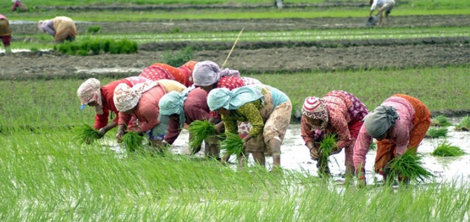

FEATURED

LATEST
Study Political Science Online - You are in your Best Moment
Study Political Science Online - You are in your Best Moment
OUR PICKS
Study Political Science Online - You are in your Best Moment

Study Political Science Online - You are in your Best Moment